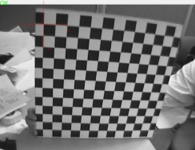

十字坐标系工具的作用是在自定义的视图里面添加一个十字坐标系GUI图形，可以作为参考点位置等，方便观察。初始旋转角度是0度，X轴是水平方向，Y轴是竖直方向。

| 分类 | 参数名称 | 参数描述 |
|---|---|---|
| 属性窗口 | 只绘制正半轴 | 十字坐标系只显示X轴、Y轴的正半轴。 |
| X轴正方向 | 十字坐标系X轴正方向，向右或向左。 | |
| Y轴正方向 | 十字坐标系Y轴正方向，向下或向上。 | |
| 显示坐标轴标签 | 十字坐标系中显示X轴、Y轴标识。 | |
| 旋转角度 | 十字坐标系的旋转角度，顺时针为正，单位为度。 | |
| X轴长度 | 十字坐标系X轴长度，即“旋转角度”为0度时，水平方向的长度。 | |
| Y轴长度 | 十字坐标系Y轴长度，即“旋转角度”为0度时，竖直方向的长度。 | |
| 图像窗口 | 无 | 无 |
| 数据链 | 坐标系原点 | 十字坐标系的原点在图像上的位置。输入是二维向量类型，向量元素是double类型。 |
| 高级界面 | 无 | 无 |
| 分类 | 参数名称 | 参数描述（参数的含义） |
|---|---|---|
| 监视窗口 | 坐标原点 | 十字坐标系的原点在图像上的位置。 |
| 执行结果 | 工具执行结果。 | |
| 执行时间 | 工具执行时间。 | |
| 图像窗口(显示在视图窗口里面的图形和文本) | 十字坐标系 | 在自定义视图显示十字坐标系图形。和图像以及定位工具使用一样，拖拽到需要显示的视图。Edit和Result视图上不会显示十字坐标系图形。 |
| 执行结果 | 显示工具执行结果，执行成功显示“OK”，执行失败显示“NG”，同监视窗口的执行结果参数。 |
无
十字坐标系工具的GUI图形结果只会显示在自定的视图窗口，不会在Edit和Result窗口上显示。要在那个窗口上显示十字坐标系GUI图形，就拖拽该十字坐标系工具到视图窗口，选择要显示的GUI图形。和显示图像，定位工具结果一样。
属性里的“旋转角度”顺时针为正，初始旋转角度为0度，X轴指向水平方向，Y轴指向竖直方向。
参见“\Samples\十字坐标系工具.gvp”。